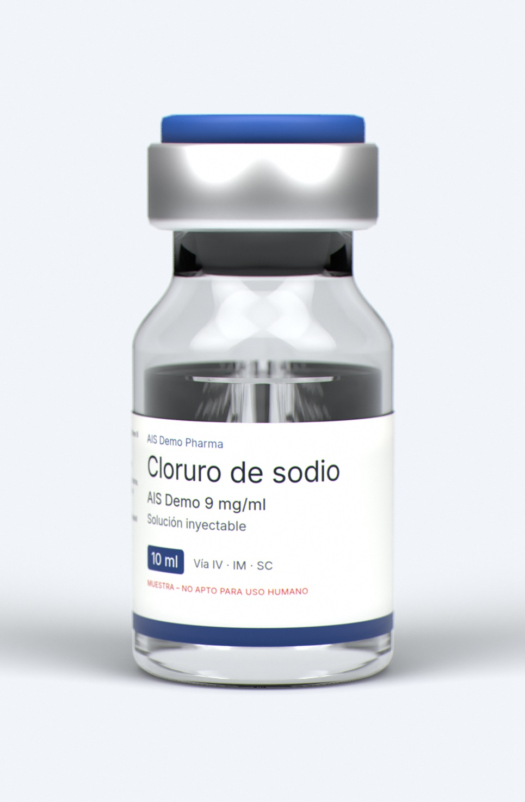

What we inspect on each vial
At AIS Vision Systems, we develop machine vision solutions for quality control in the pharmaceutical industry. We inspect closures, labels, markings and codes in real time to detect defects and maintain the traceability of each unit.

1234Cap and mouth
Presence, position and integrity of the closure.
Liquid level
Fill control for each container.
Label
360° presence, position and visual defects.
Traceability and serialisation
Reading of batch, expiry date and codes.